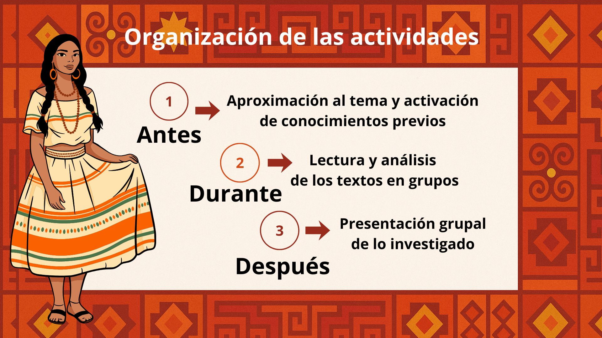

A continuación, se desarrollan en profundidad las tres etapas de este Recurso Educativo Abierto. Tenga en cuenta que, al tratarse de un recurso abierto, usted puede modificar los contenidos, adaptar las actividades, cambiar los textos sugeridos, seleccionar solo una parte del material o incluso trabajar un tema diferente. La propuesta está pensada como una guía flexible, abierta a su contexto, creatividad y decisiones pedagógicas.